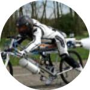
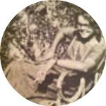
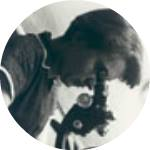

The Scientists
Leo Pallanck
I received my BS in Biochemistry at UC Davis in 1985. I then pursued graduate work studying how proteins interact with nucleic acids with Dr. LaDonne Schulman at the Albert Einstein College of Medicine. I supplemented this molecular training with additional training in Drosophila genetics by pursuing postdoctoral studies at the University of Wisconsin with Dr.Barry Ganetzky, a member of the National Academy of Sciences, and a leader in the field of Drosophila neurogenetics. I am currently a Professor in the Department of Genome Sciences at the University of Washington, where I have spent the entirety of my independent scientific career.
Jon Burman
Mitochondrial-associated diseases encompass a large number of metabolic and degenerative ailments. My work in the Pallanck lab has focused on trying to understand the mechanisms that lead from mitochondrial dysfunction to neurodegeneration. Towards this goal I have developed a novel method to measure mitochondrial membrane potential in fly neural subsets (Burman et al., 2012, Thomas et al., 2014), and characterized a fly model of mitochondrial complex I deficiency (Burman et al., 2014).
Marie Davis
I am a neurologist with research and clinical practice interests in genetic movement disorders, using Drosophila models to understand the mechanisms underlying increased risk of Parkinson’s disease due to mutations in GBA.
Colby Samstag
I am a graduate student in the MCB program working on the mechanisms that influence the frequency of mtDNA mutations.
Ruth Thomas
I am a postdoctoral fellow using a genetic approach to identify novel components of the PINK1-Parkin pathway.
Evvie Vincow
I am a postdoctoral fellow exploring the mechanisms of mitochondrial protein quality control.